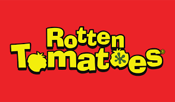
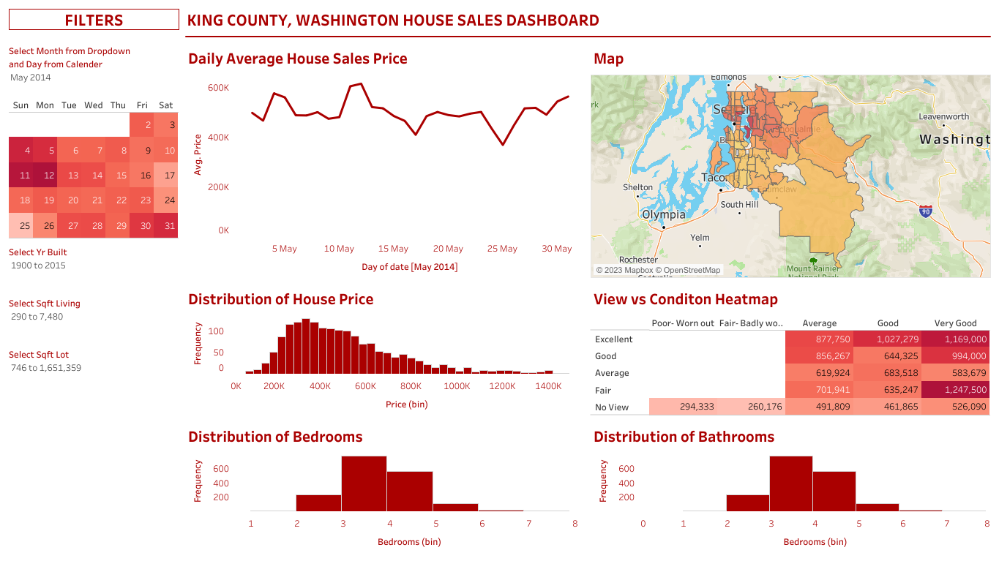

As a dedicated Data Analysis intern, I am passionate about deriving insights from data to drive informed decision making. With a strong foundation in data analytics and a commitment to continous learning, I am ready to tackle complex
challenges and contribute valuable solutions.


I highlight my proficiency in analyzing post-training feedback collected from Trainers of Trainers (TOTs) following the Digital Skills TOT training administered by the ICT Authority. Utilizing Tableau, I meticulously dissected the feedback data, unveiling valuable insights and trends pivotal for program evaluation and enhancement. Through sophisticated visualization techniques, I crafted an intuitive and insightful report, elucidating key takeaways and areas for improvement. This report served as a strategic tool, empowering stakeholders to make data-driven decisions, refine training methodologies, and enhance overall program effectiveness. My adept utilization of Tableau exemplifies my commitment to leveraging cutting-edge technologies for impactful data analysis and informed decision-making in organizational settings.

I showcase my expertise in data analysis and visualization through a project where I delved into worldwide malaria infection data spanning from 2000 to 2017, utilizing Tableau as my primary tool. With meticulous attention to detail, I extracted and curated extensive datasets, encompassing various demographic and epidemiological factors related to malaria incidence. Leveraging the powerful capabilities of Tableau, I transformed this raw data into dynamic and interactive visualizations that provided a comprehensive overview of the global malaria landscape over the specified period. From mapping the geographical distribution of malaria cases to uncovering temporal trends and demographic patterns, my visualizations offered valuable insights into the prevalence and dynamics of malaria infection worldwide. This project not only demonstrated my proficiency in data analysis and visualization but also underscored my commitment to utilizing data-driven approaches to address significant public health challenges on a global scale.

I'm proud to showcase my experience in analyzing pre-training feedback gathered from Trainers of Trainers (TOTs) during the Digital Skills TOT training conducted by the ICT Authority. Leveraging the power of Power BI, I meticulously dissected the feedback data to extract valuable insights and trends. By employing advanced analytics and visualization techniques, I was able to transform raw feedback into a comprehensive visualization report. This report not only provided a clear overview of the sentiments and perceptions of the TOTs but also offered actionable recommendations for optimizing future training sessions. Through this project, I demonstrated my proficiency in data analysis and visualization, as well as my commitment to leveraging technology to drive informed decision-making and continuous improvement initiatives.
In this project, I delved into the latest COVID-19 data, harnessing the power of SQL and Microsoft SQL Server Management Studio to perform comprehensive data analysis. The goal was to derive meaningful insights from this critical dataset.
In this project, I harnessed the power of SQL and utilized Microsoft SQL Server Management Studio to execute comprehensive data cleaning and preprocessing for the NashvilleHousing dataset, a valuable resource for understanding the
real estate landscape in Nashville, Tennessee.

I successfully conducted extensive COVID_19 data analysis and visualization using Microsoft SQL Server Management Studio and Tableau, providing crucial insights into pandemic trends. This project showcased my prfociency in data management
and visualization as well as my ability to derive actionable insights from complex datasets.

In this project, I harnessed the power of Python to extract valuable information from Rotten Tomatoes, one of the most renowned movie review websites. The objective was to collect and analyze the ratings of the top movies.

Explore my latest project - an interactive dashboard for King County house sales. Analyze real estate trends with ease, thanks to user-friendly features like filtering, sorting, and rich visualizations. Technologies Used: Data Cleaning:
Microsoft SQL Server Management Studio Data Visualization: Tableau Discover the King County real estate market insights through this interactive dashboard.